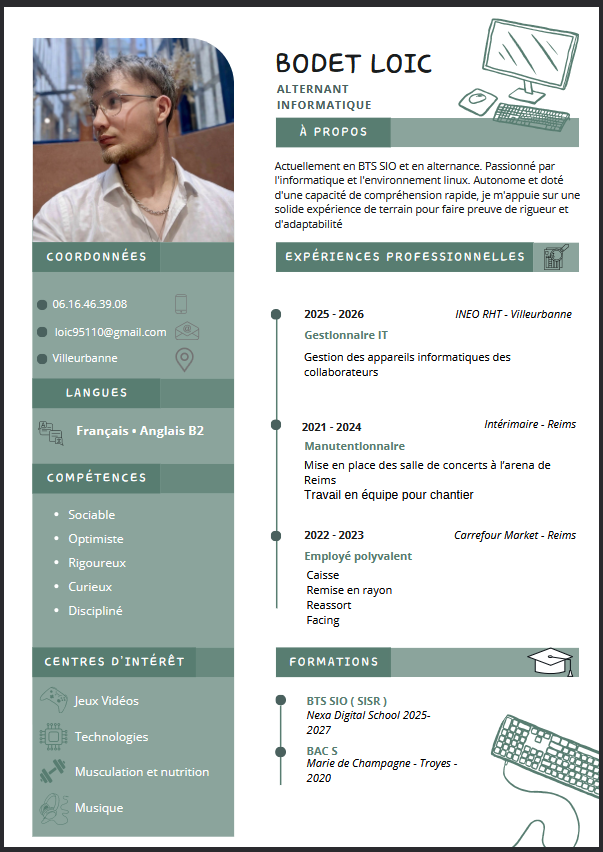

Je m’appelle Loïc Bodet, j’ai 23 ans et je suis actuellement en alternance chez Ineo RHT.
Mon intérêt pour l'informatique n'a pas été immédiat. Au départ, c’est ma passion pour les jeux vidéo qui a éveillé ma curiosité : j'ai commencé à m'interroger sur le fonctionnement technique de ce que je voyais à l'écran, notamment sur la notion binaire de bits (0/1). Cependant, à cette époque, ma curiosité n'était encore que superficielle.
C’est véritablement en classe de première, grâce à la matière "Sciences du numérique", que ma vocation s'est confirmée. Au contact de passionnés, j'ai découvert le plaisir d'apprendre et de comprendre les systèmes. Cette curiosité m'a pushed à monter mon propre PC, une expérience concrète qui m'a permis de mieux appréhender le matériel et ses fonctionnalités.
Bien que mon parcours n'ait pas été linéaire — après une orientation en STAPS et une sélection initiale refusée en BTS informatique — je suis aujourd'hui plus impliqué que jamais. Cette persévérance a renforcé mon appétence pour l'apprentissage continu et ma motivation à découvrir l'étendue des possibilités qu'offre ce domaine.
